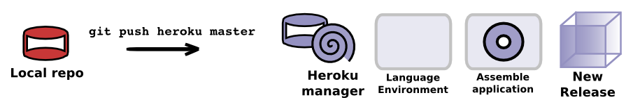

- Introduction
- 1. Heroku Features in a nutshell
- 2. Getting Started
- 3. Deploying with Heroku Button
- 4. Deploying Sample Apps
- 5. Understanding Logging
- 6. Scaling your app
- 7. Process Types
- 8. Releases & Rollbacks
- 9. Configuration Variables
- 10. Postgres DB on Demand
- 11. Scheduling tasks
- 12. Multiple environments
- 13. Collaborating around apps
- 14. Performance Monitoring
- 15. New Play App Workflow
- 16. Salesforce Integration
- 17. Next Steps
- 18. Extras
- 19. Continuous Integration workflow
- 20. Gitbook Note types
- 21. Quiz example
- Published using GitBook
Heroku behind the scenes
Each time you push a new change (commit) to Heroku the following happens:

- Git compresses the changes in your local git repository, so there is less data to send
- Heroku repository unpacks the code and adds the new commits to its repository for your app
- Heroku detects what language your application is using and installs the relevant runtime and build tools
- If your application has depenencies, they are pulled in from either the Heroku archive or standard repositories on the Internet.
- Your application is compiled if neccessary (using what ever build tool your project uses)
- A single file called a Slug is created, this is your complete application ready to be started
- Any addons that provisioned by the buildpack are added to the Slug (ie. database)
- Any configuration variables set for your app are added
- A dyno (a Linux container compute resource) is started and your Slug is loaded into the dyno.
- Any processes defined in the
Procfilefor your project or processes defined in the buildpack for your langauge are started.
Addition details about Java apps
More specifically in the case of a Java application, the established environment is OpenJDK and the Maven build tool is installed. Maven then resolves the project dependencies and builds your source code into an app.

Heroku has a mirror of many of the common dependencies used for each of its supported languates. This mirror is used by buildpacks to speed up the deployment process.
Dependencies are also cached between deploys to save downloading the Internet on each deploy.